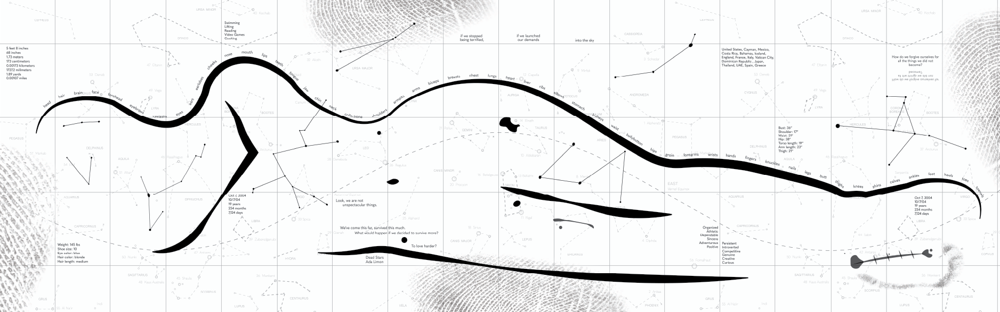
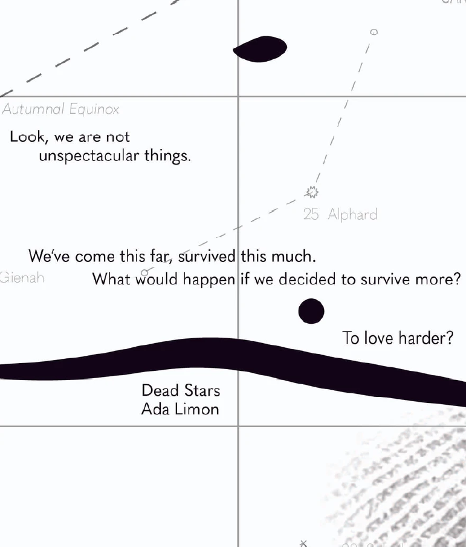
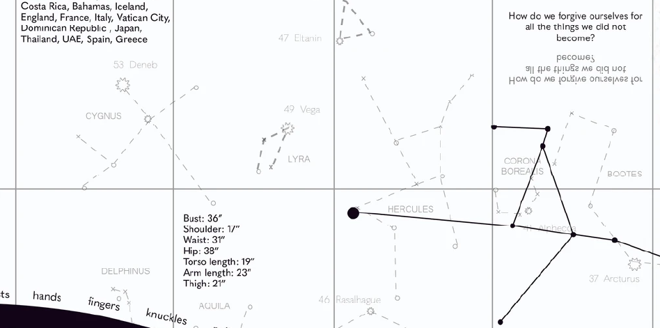
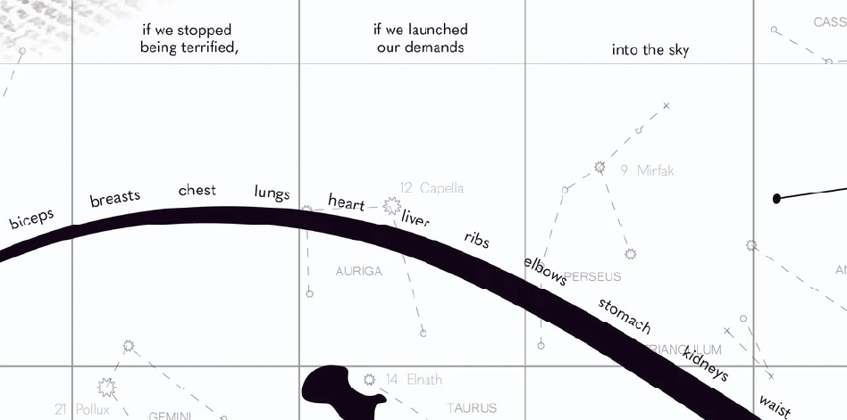
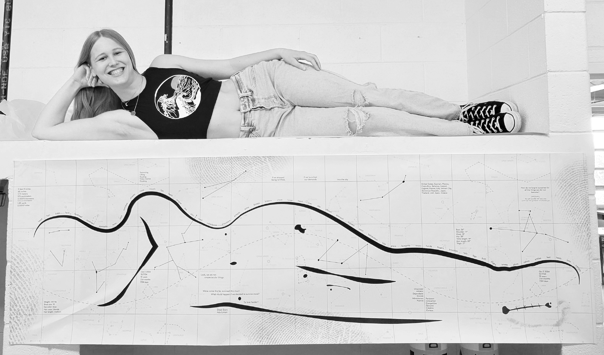
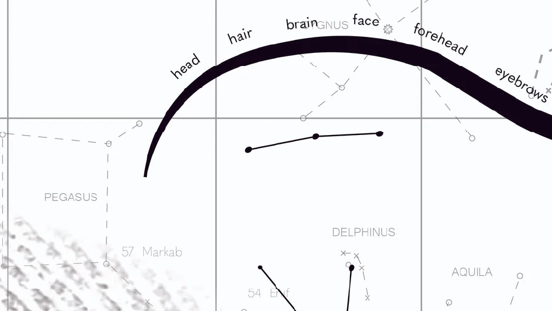
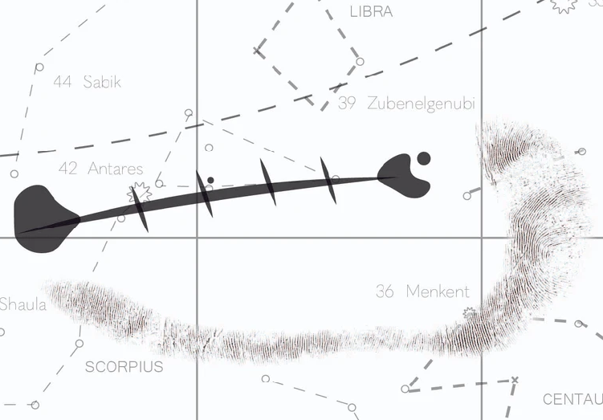
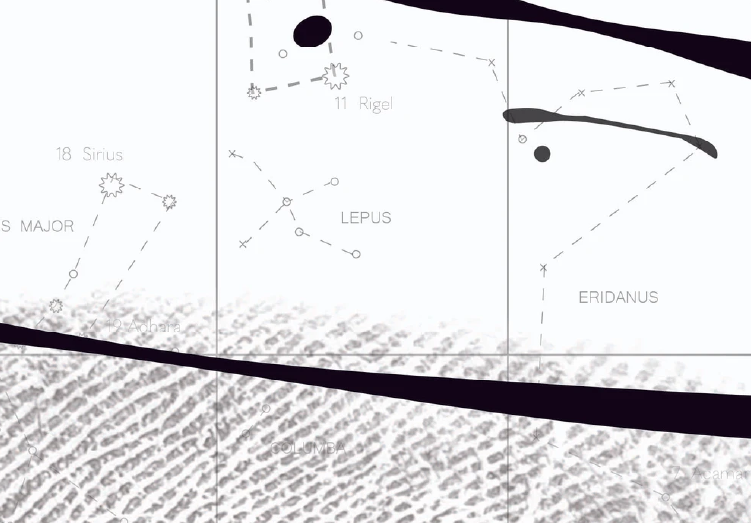
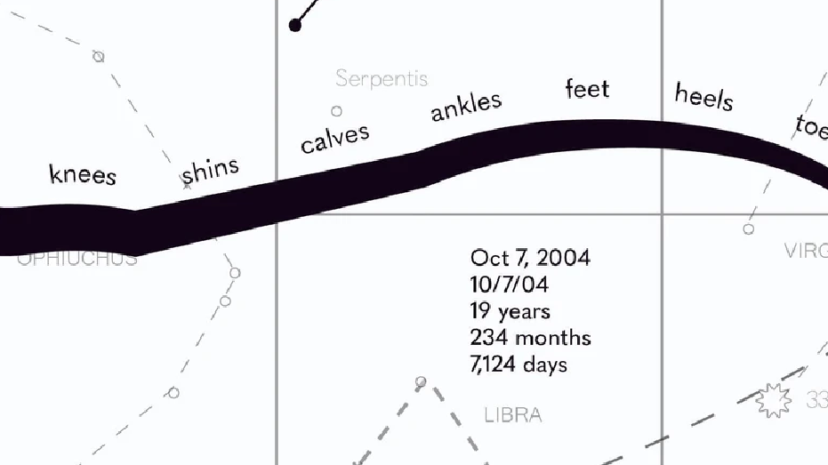

Designing a life-sized “self-portrait” referencing the body, with both visual and verbal information, and that functions equally well at both display and reading distances. Using a star map as the basis for the self portrait, the body becomes a constellation with data points of myself , my interests, and my favorite quotes.









Website Hand Coded by Leah Mozeleski
Best Viewed on Desktop